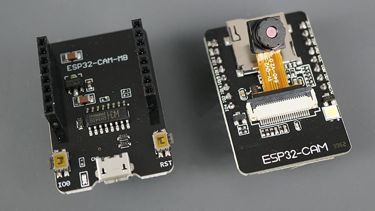
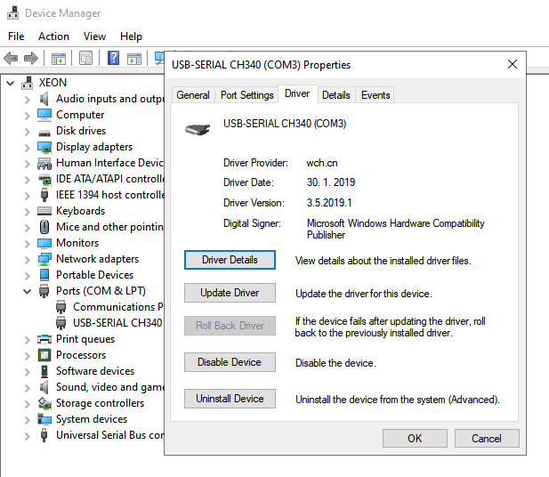
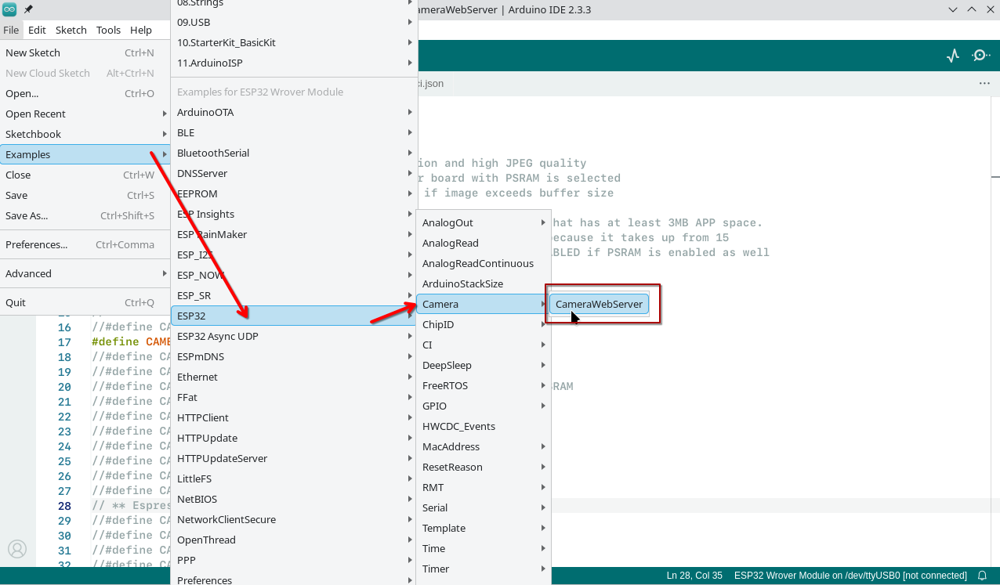
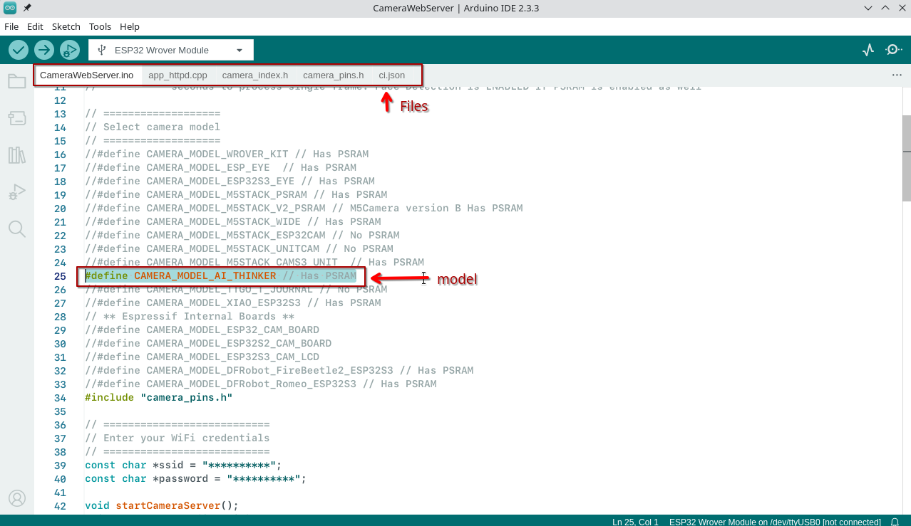
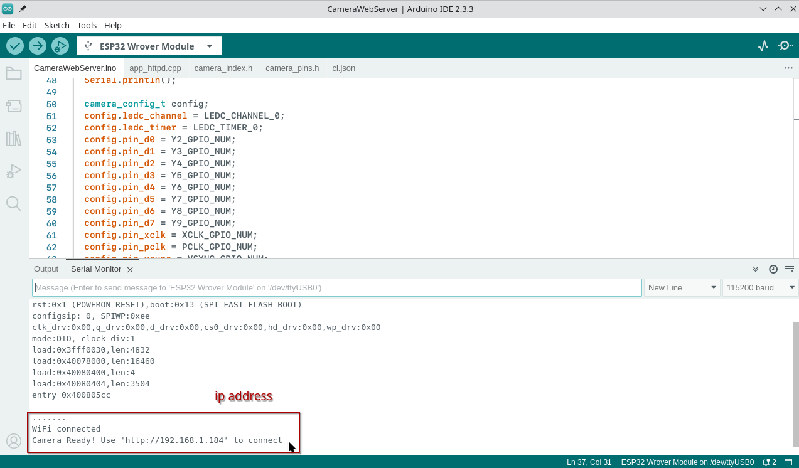
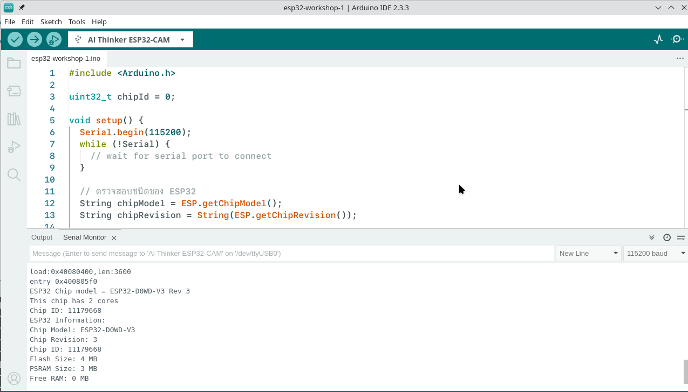
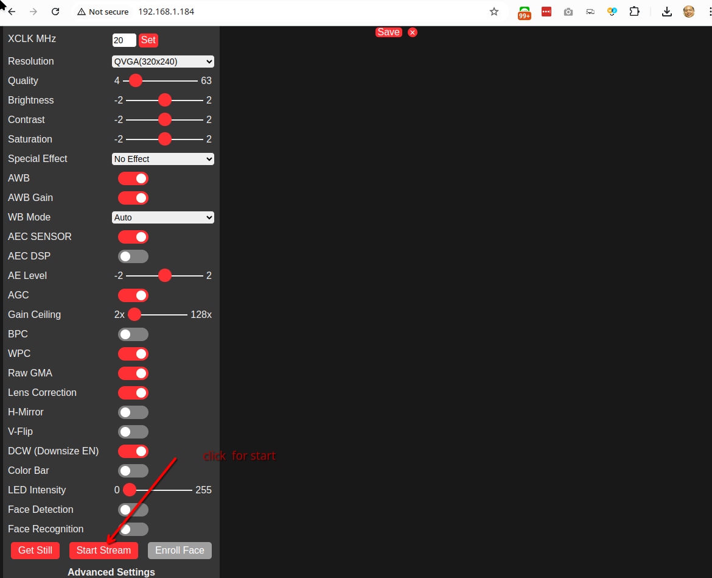
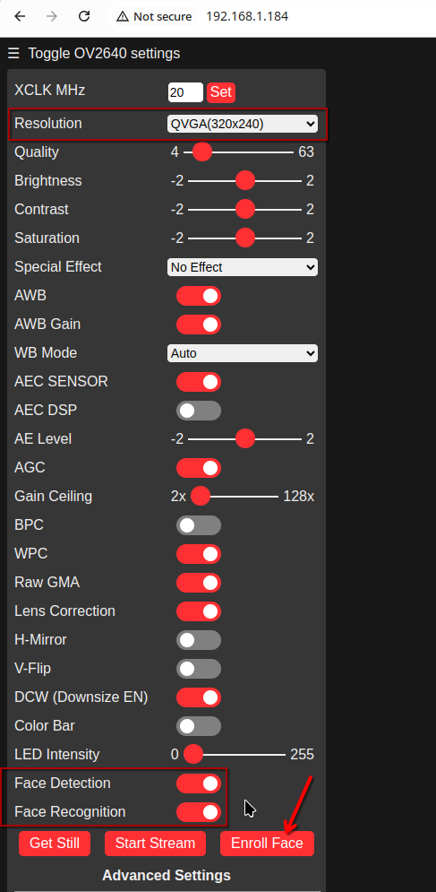

2 ESP 32 CameraWebServer (Stream)
เตรียม Driver CH340C USB to serial chip

https://www.arduined.eu/files/windows10/CH341SER.zip

Select Code from example


Upload code:

สามารถเลือก Ai Thinker ESP32-CAM

- ผลจากการรัน code esp32-workshop-1.ino
ESP32 Chip model = ESP32-D0WD-V3 Rev 3
This chip has 2 cores
Chip ID: 11179668
ESP32 Information:
Chip Model: ESP32-D0WD-V3
Chip Revision: 3
Chip ID: 11179668
Flash Size: 4 MB
PSRAM Size: 3 MB
Free RAM: 0 MB
ทดสอบ
| cameraWebServer.ino |
|---|
| #include "esp_camera.h"
#include <WiFi.h>
//
// WARNING!!! PSRAM IC required for UXGA resolution and high JPEG quality
// Ensure ESP32 Wrover Module or other board with PSRAM is selected
// Partial images will be transmitted if image exceeds buffer size
//
// You must select partition scheme from the board menu that has at least 3MB APP space.
// Face Recognition is DISABLED for ESP32 and ESP32-S2, because it takes up from 15
// seconds to process single frame. Face Detection is ENABLED if PSRAM is enabled as well
// ===================
// Select camera model
// ===================
//#define CAMERA_MODEL_WROVER_KIT // Has PSRAM
//#define CAMERA_MODEL_ESP_EYE // Has PSRAM
//#define CAMERA_MODEL_ESP32S3_EYE // Has PSRAM
//#define CAMERA_MODEL_M5STACK_PSRAM // Has PSRAM
//#define CAMERA_MODEL_M5STACK_V2_PSRAM // M5Camera version B Has PSRAM
//#define CAMERA_MODEL_M5STACK_WIDE // Has PSRAM
//#define CAMERA_MODEL_M5STACK_ESP32CAM // No PSRAM
//#define CAMERA_MODEL_M5STACK_UNITCAM // No PSRAM
//#define CAMERA_MODEL_M5STACK_CAMS3_UNIT // Has PSRAM
#define CAMERA_MODEL_AI_THINKER // Has PSRAM
//#define CAMERA_MODEL_TTGO_T_JOURNAL // No PSRAM
//#define CAMERA_MODEL_XIAO_ESP32S3 // Has PSRAM
// ** Espressif Internal Boards **
//#define CAMERA_MODEL_ESP32_CAM_BOARD
//#define CAMERA_MODEL_ESP32S2_CAM_BOARD
//#define CAMERA_MODEL_ESP32S3_CAM_LCD
//#define CAMERA_MODEL_DFRobot_FireBeetle2_ESP32S3 // Has PSRAM
//#define CAMERA_MODEL_DFRobot_Romeo_ESP32S3 // Has PSRAM
#include "camera_pins.h"
// ===========================
// Enter your WiFi credentials
// ===========================
const char *ssid = "TrueGigatexFiber_uS7_2.4G";
const char *password = "itbakery@9";
void startCameraServer();
void setupLedFlash(int pin);
void setup() {
Serial.begin(115200);
Serial.setDebugOutput(true);
Serial.println();
camera_config_t config;
config.ledc_channel = LEDC_CHANNEL_0;
config.ledc_timer = LEDC_TIMER_0;
config.pin_d0 = Y2_GPIO_NUM;
config.pin_d1 = Y3_GPIO_NUM;
config.pin_d2 = Y4_GPIO_NUM;
config.pin_d3 = Y5_GPIO_NUM;
config.pin_d4 = Y6_GPIO_NUM;
config.pin_d5 = Y7_GPIO_NUM;
config.pin_d6 = Y8_GPIO_NUM;
config.pin_d7 = Y9_GPIO_NUM;
config.pin_xclk = XCLK_GPIO_NUM;
config.pin_pclk = PCLK_GPIO_NUM;
config.pin_vsync = VSYNC_GPIO_NUM;
config.pin_href = HREF_GPIO_NUM;
config.pin_sccb_sda = SIOD_GPIO_NUM;
config.pin_sccb_scl = SIOC_GPIO_NUM;
config.pin_pwdn = PWDN_GPIO_NUM;
config.pin_reset = RESET_GPIO_NUM;
config.xclk_freq_hz = 20000000;
config.frame_size = FRAMESIZE_UXGA;
config.pixel_format = PIXFORMAT_JPEG; // for streaming
//config.pixel_format = PIXFORMAT_RGB565; // for face detection/recognition
config.grab_mode = CAMERA_GRAB_WHEN_EMPTY;
config.fb_location = CAMERA_FB_IN_PSRAM;
config.jpeg_quality = 12;
config.fb_count = 1;
// if PSRAM IC present, init with UXGA resolution and higher JPEG quality
// for larger pre-allocated frame buffer.
if (config.pixel_format == PIXFORMAT_JPEG) {
if (psramFound()) {
config.jpeg_quality = 10;
config.fb_count = 2;
config.grab_mode = CAMERA_GRAB_LATEST;
} else {
// Limit the frame size when PSRAM is not available
config.frame_size = FRAMESIZE_SVGA;
config.fb_location = CAMERA_FB_IN_DRAM;
}
} else {
// Best option for face detection/recognition
config.frame_size = FRAMESIZE_240X240;
#if CONFIG_IDF_TARGET_ESP32S3
config.fb_count = 2;
#endif
}
#if defined(CAMERA_MODEL_ESP_EYE)
pinMode(13, INPUT_PULLUP);
pinMode(14, INPUT_PULLUP);
#endif
// camera init
esp_err_t err = esp_camera_init(&config);
if (err != ESP_OK) {
Serial.printf("Camera init failed with error 0x%x", err);
return;
}
sensor_t *s = esp_camera_sensor_get();
// initial sensors are flipped vertically and colors are a bit saturated
if (s->id.PID == OV3660_PID) {
s->set_vflip(s, 1); // flip it back
s->set_brightness(s, 1); // up the brightness just a bit
s->set_saturation(s, -2); // lower the saturation
}
// drop down frame size for higher initial frame rate
if (config.pixel_format == PIXFORMAT_JPEG) {
s->set_framesize(s, FRAMESIZE_QVGA);
}
#if defined(CAMERA_MODEL_M5STACK_WIDE) || defined(CAMERA_MODEL_M5STACK_ESP32CAM)
s->set_vflip(s, 1);
s->set_hmirror(s, 1);
#endif
#if defined(CAMERA_MODEL_ESP32S3_EYE)
s->set_vflip(s, 1);
#endif
// Setup LED FLash if LED pin is defined in camera_pins.h
#if defined(LED_GPIO_NUM)
setupLedFlash(LED_GPIO_NUM);
#endif
WiFi.begin(ssid, password);
WiFi.setSleep(false);
while (WiFi.status() != WL_CONNECTED) {
delay(500);
Serial.print(".");
}
Serial.println("");
Serial.println("WiFi connected");
startCameraServer();
Serial.print("Camera Ready! Use 'http://");
Serial.print(WiFi.localIP());
Serial.println("' to connect");
}
void loop() {
// Do nothing. Everything is done in another task by the web server
delay(10000);
}
|

คำอธิบายโค้ด
- กำลังโหลดไลบรารีที่จำเป็น
#include "esp_camera.h"
#include <WiFi.h>
- การเลือกโมเดลกล้อง:
ให้เลือกโมเดลกล้องที่คุณใช้งานอยู่และยกเลิกการคอมเมนต์ โมเดลกล้องที่ติดตั้งในโมดูล ESP32-CAM ของเราคือรุ่น AI_THINKER
#define CAMERA_MODEL_AI_THINKER // Has PSRAM
- การโหลดไลบรารี “camera_pins.h”:
ไลบรารีนี้ใช้สำหรับกำหนดการเชื่อมต่อระหว่างพินของกล้องกับ ESP32.
- การกำหนดค่าเครือข่าย Wi-Fi ของคุณ:
ใส่ชื่อเครือข่าย (SSID) และรหัสผ่านของเครือข่าย Wi-Fi ที่คุณต้องการเชื่อมต่อ.
const char* ssid = "**************";
const char* password = "**************";
- การกำหนดฟังก์ชัน สำหรับตั้งค่าเซิร์ฟเวอร์ หน้าเว็บ และไฟแฟลชของกล้อง:
สร้างฟังก์ชันที่ใช้สำหรับการตั้งค่าเซิร์ฟเวอร์ การแสดงหน้าเว็บ และการควบคุมไฟแฟลชของกล้อง.
void startCameraServer();
void setupLedFlash(int pin);
- การตั้งค่าการสื่อสารแบบอนุกรมและเปิดใช้งานข้อความดีบัก:
กำหนดค่าการสื่อสารผ่านพอร์ตอนุกรม (Serial) และเปิดใช้งานการแสดงข้อความดีบักเพื่อช่วยตรวจสอบการทำงานของโปรแกรม.
Serial.begin(115200);
Serial.setDebugOutput(true)
- การกำหนดค่าพินของกล้อง บน ESP32 ตามไฟล์ “camera_pins.h”:
กำหนดค่าการเชื่อมต่อระหว่างพินของกล้องและ ESP32 โดยใช้การตั้งค่าที่ระบุไว้ในไฟล์ “camera_pins.h”.
camera_config_t config;
config.ledc_channel = LEDC_CHANNEL_0;
config.ledc_timer = LEDC_TIMER_0;
config.pin_d0 = Y2_GPIO_NUM;
config.pin_d1 = Y3_GPIO_NUM;
config.pin_d2 = Y4_GPIO_NUM;
config.pin_d3 = Y5_GPIO_NUM;
config.pin_d4 = Y6_GPIO_NUM;
config.pin_d5 = Y7_GPIO_NUM;
config.pin_d6 = Y8_GPIO_NUM;
config.pin_d7 = Y9_GPIO_NUM;
config.pin_xclk = XCLK_GPIO_NUM;
config.pin_pclk = PCLK_GPIO_NUM;
config.pin_vsync = VSYNC_GPIO_NUM;
config.pin_href = HREF_GPIO_NUM;
config.pin_sscb_sda = SIOD_GPIO_NUM;
config.pin_sscb_scl = SIOC_GPIO_NUM;
config.pin_pwdn = PWDN_GPIO_NUM;
config.pin_reset = RESET_GPIO_NUM;
- การกำหนดค่ากล้องและพารามิเตอร์ของภาพ:
ตั้งค่าการทำงานของกล้องและกำหนดพารามิเตอร์ของภาพ เช่น ความละเอียด ความคมชัด และการปรับแต่งอื่นๆ ให้เหมาะสมกับการใช้งาน.
config.xclk_freq_hz = 20000000;
config.frame_size = FRAMESIZE_UXGA;
config.pixel_format = PIXFORMAT_JPEG; // for streaming
//config.pixel_format = PIXFORMAT_RGB565; // for face detection/recognition
config.grab_mode = CAMERA_GRAB_WHEN_EMPTY;
config.fb_location = CAMERA_FB_IN_PSRAM;
config.jpeg_quality = 12;
config.fb_count = 1;
- การเปิดใช้งานกล้อง:
เริ่มต้นและเปิดใช้งานการทำงานของกล้อง โดยตรวจสอบการเชื่อมต่อและการตั้งค่าพินเพื่อให้กล้องพร้อมสำหรับการใช้งาน.
esp_err_t err = esp_camera_init(&config);
if (err != ESP_OK) {
Serial.printf("Camera init failed with error 0x%x", err);
return;
}
- การเชื่อมต่อ Wi-Fi:
ตั้งค่าการเชื่อมต่อกับเครือข่าย Wi-Fi โดยใช้ชื่อ (SSID) และรหัสผ่านที่กำหนดไว้ เพื่อให้ ESP32 สามารถเชื่อมต่อกับอินเทอร์เน็ตหรือเครือข่ายท้องถิ่น.
WiFi.begin(ssid, password);
WiFi.setSleep(false);
- การเปิดใช้งานเซิร์ฟเวอร์:
เริ่มต้นเซิร์ฟเวอร์บน ESP32 เพื่อให้สามารถรับคำขอจากเว็บเบราว์เซอร์หรืออุปกรณ์อื่น ๆ ผ่านเครือข่าย Wi-Fi โดยเซิร์ฟเวอร์จะให้บริการหน้าเว็บหรือฟังก์ชันต่าง ๆ ที่ต้องการ.
- สุดท้าย, หากทุกอย่างทำงานได้ดี:
เราจะแสดงที่อยู่ IP ของโมดูล ESP32CAM บนพอร์ตอนุกรม เพื่อให้สามารถเข้าถึงกล้องผ่านเว็บเบราว์เซอร์หรืออุปกรณ์อื่น ๆ ที่เชื่อมต่อกับเครือข่ายเดียวกัน.
Serial.print("Camera Ready! Use 'http://");
Serial.print(WiFi.localIP());
Serial.println("' to connect");
การจดจำใบหน้าด้วย ESP32CAM
เพื่อเปิดใช้งานการจดจำใบหน้า ให้เริ่มจากการตั้งค่าความละเอียดของภาพเป็น QVGA (320x240 พิกเซล) จากนั้นเปิดใช้งานตัวเลือก “Face Detection” และ “Face Recognition” เพื่อให้กล้องสามารถตรวจจับและจดจำใบหน้าได้.
